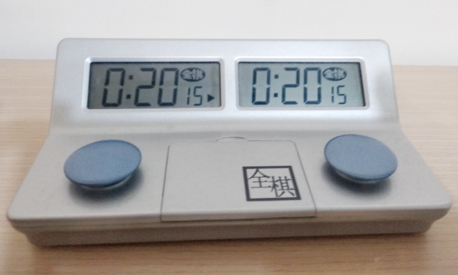
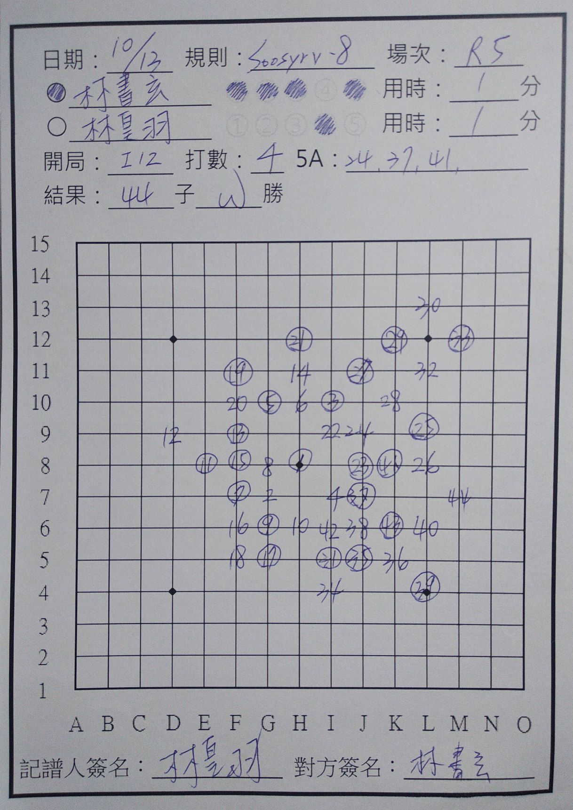

目前協會比賽會使用瑞士制和循環制兩種賽制，使用程式排賽程非常方便
EXCEL瑞士制程式下載
瑞士制：目前正式比賽通常為五輪，因此會使用瑞士制，以便在有限輪數中，給每位選手一個合理的排名，且賽程中不會淘汰任何選手，可讓每位選手都下滿所有輪數。
除第一輪依選手籤號分配對手外，之後每輪會先以目前得分由高到低排序，基本上每次將分數最高的兩位選手抓對，若之前已遇過，則跳過抓下一位，直到所有人都分配到對手為止。
輪空：當參賽人數為奇數時，每輪會有一位選手沒有被分對到對手（通常為排名最後的選手），稱之為輪空，記分時該選手可直接獲得贏棋的分數，每人限輪空一次。
當比賽結束，同分的選手，會用輔分來做為排名依據，輔分通常會以所遇對手的得分及對戰勝負來記分。
循環制：每位選手都會對上的賽制，所以通常會限制參賽人數 。
認輸：自認己方棋局無可挽回，可隨時提出。
提和時機：己方落子敲鐘後，可口頭向對手提和，對手若表示同意，則本局和局，對手若不同意，則繼續落子。
若有規則，禁手或其他任何疑慮可隨時向裁判提出。
正式比賽為控制比賽時間，都配有計時鐘，其介面會顯示雙方可用時限，當按下己方按鈕時，己方時間暫停，對方時間開始倒數。若在棋局未分勝負前，有一方時間用盡，則判該方超時敗。
敲鐘時，應與落子使用同一隻手（避免左手落子右手敲鐘，容易變成先敲鐘後落子）。
目前手機ＡＰＰ有很多現成的棋鐘程式可用，蒐尋棋鐘即可。
| 基本時限 | 可自由運用的思考時間，正式比賽至少２０分鐘以上 |
| 每手加時 | 每下一子，可獲得的時間，正式比賽至少１０秒以上 |
| 超時 | 時間用盡判負 |
| 敲鐘時機 | 已方動作結束時 １.棋局開始時（由白方敲鐘確定棋局開始） ２.落子後 ３.開局階段，選擇由對方落子時 ４.放棄落子（若雙方接連放棄判和棋） |

對局中雙方棋手皆應以可理解之形式，詳細記錄自己及對方的每一步，記錄方式由比賽主辦單位訂定。通常是記錄對局者、規則、手順、用時、打數、打點、勝負。
記譜紙下載
| 時點 | 紀錄事項 | 紀錄方式 |
| 開始前 | 日期、規則、場次、雙方姓名 | 棋盤上方的欄位 |
| 進行中 | 每一手的位置，順序 | 在棋盤上寫上手順，黑棋則以圓圈加注①、2、③、4、⑤ |
| 前五手是誰下的 （因有開局規則，前五手不一定輪流落子） |
姓名右方的圈，用來劃記前五手是誰下的 如圖，可知上方選手下了第１２３５ 手 |
|
| 開局 | 前三子形成的26種開局，不記也沒關係 | |
| 黑方白方 | 在黑白方確定後，將拿黑的棋手姓名左方的圈塗滿 如圖，可知上方選手為黑方 |
|
| 打數、
5A （並非每種規則都需要） |
如圖，打數為4，表示黑方第五手下4個打點讓白方選擇其一 未被選擇打點有3個，紀錄在5A 如圖，分別在棋盤上24,37,41這三子的位置，若該位置沒有棋子，則用座標表示 |
|
| 結束後 | 使用子數、對局結果 | 寫黑勝，白勝或和棋（黑白可用BW表示） |
| 用時 | 記錄棋鐘上的剩餘時間 | |
| 雙方簽名為證 | 棋盤下方的簽名 |
